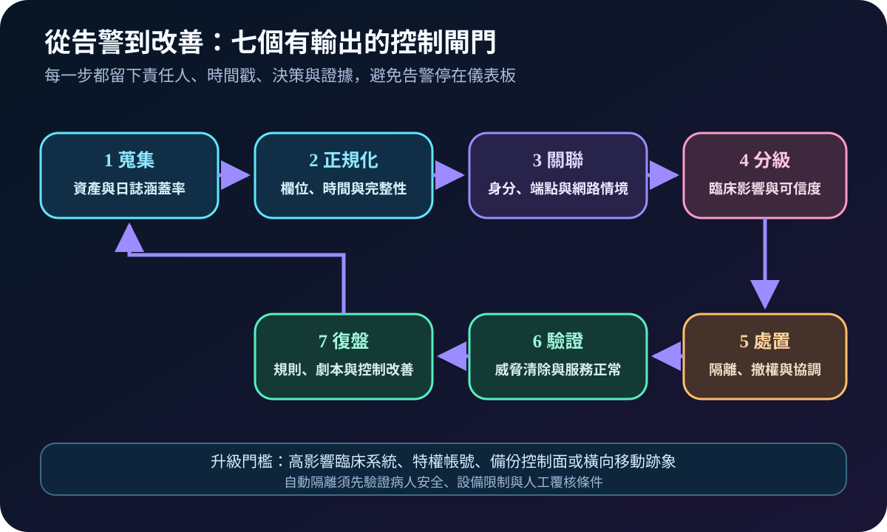
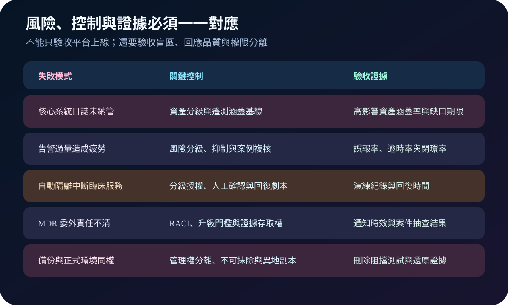

健康台灣深耕計畫-資安治理 · 2026-08-20
醫療持續監控如何從告警走到處置：SOC、XDR 與 MDR 驗收
作者：Dr. William｜醫療資訊與資安治理實務工作者
這項能力要解決的是：醫院已部署多種安全工具，卻仍可能因日誌盲區、告警過量或責任斷點而錯過事件。持續監控的成果不是儀表板數量，而是異常能被及時發現、依臨床影響分級、完成處置並留下可追溯證據。
名詞解釋：工具、團隊與服務的角色不同
SOC（Security Operations Center）是安全營運職能；SIEM（Security Information and Event Management）集中日誌、關聯規則與查詢；EDR（Endpoint Detection and Response）聚焦端點遙測與回應；XDR（Extended Detection and Response）跨端點、身分、網路與雲端關聯；MDR（Managed Detection and Response）由外部團隊提供監看與回應服務。MTTD衡量平均偵測時間，MTTR則須明確定義是回應、遏止或復原，否則數字無法比較。
治理邊界：零信任提供持續驗證與最小權限原則；不可抹除備份保護復原證據與資料。兩者都是監控後續控制的一部分，不能取代事件蒐集、分析與人工決策。
規劃：先定義保護對象、責任與驗收
規劃應以高影響臨床服務為起點，盤點身分、伺服器、端點、網路、雲端、醫療設備、介接與備份控制面的遙測需求。資安、資訊、醫工、臨床、法遵與委外服務商須建立 RACI，並定義 24×7 覆蓋範圍、升級門檻、可授權的隔離動作、證據保留、個資最小化及服務中斷時的替代聯絡方式。驗收指標可包含高影響資產日誌涵蓋率、告警確認與遏止時間、逾時案件、誤報率、案件閉環率及演練改善完成率。

實作：由一條高風險攻擊路徑建立閉環
- 建立基線：選定一套核心系統及其身分、端點、網路、備份與供應商存取路徑。
- 驗證遙測：確認來源完整性、時間同步、欄位品質、傳輸失敗告警與留存期限。
- 設計案例：以特權帳號異常、橫向移動、端點惡意行為及備份刪除企圖建立規則與劇本。
- 分級授權：低風險動作可自動化；可能中斷醫療設備或臨床服務的隔離須設定人工確認與回復步驟。
- 演練複測：注入可控測試訊號，量測偵測、通知、決策、遏止與證據品質，將缺口交付負責人限期關閉。
風險：看得見不代表處理得完
全面收集卻未做資產分級，會放大成本與告警疲勞；只追求低 MTTD，可能以大量低品質告警換取漂亮數字；自動隔離若未考量病人安全，可能造成新的臨床中斷；MDR 合約若未寫明升級、處置權與原始證據存取，委外後仍會留下責任空窗。備份平台若與正式環境共用管理權，攻擊者也可能同時刪除復原能力。

可執行清單
- 高影響臨床系統及其身分、網路、介接與備份日誌是否完整納管？
- 日誌中斷、時間偏移與欄位缺漏是否會主動告警？
- 每類高風險告警是否有負責人、升級期限、處置劇本與回復條件？
- MTTD、MTTR 的起訖點是否明確，且能區分確認、遏止與復原？
- MDR 是否提供案件紀錄、原始證據、服務水準與定期抽查權？
- 備份管理權是否分離，且不可抹除、異地副本與還原均經測試？
結語
持續監控的成熟度應以風險閉環衡量：重要事件有足夠遙測、告警能被分級、回應不傷害臨床服務、證據可供復盤，改善項目也能按期複測關閉。
參考資料
- CISA｜Best Practices for Event Logging and Threat Detection（發布：2024-08-21；查閱：2026-08-20）
- NIST｜Cybersecurity Framework 2.0（發布：2024-02-26；頁面更新：2026-08-19；查閱：2026-08-20）
- NIST SP 800-92｜Guide to Computer Security Log Management（發布：2006-09-13；查閱：2026-08-20）
內容說明
本文依健康台灣深耕計畫相關治理內容整理，並參考公開事件記錄與資安框架資料建立規劃、實作及驗收方法；不取代主管機關正式公告、法律意見或個別醫院風險評估。